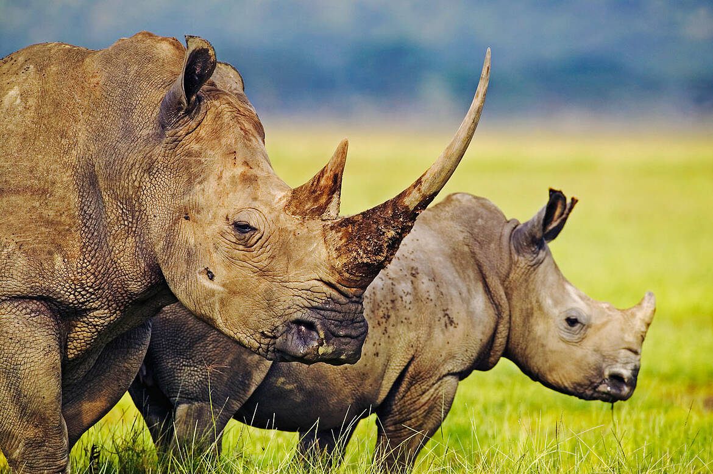
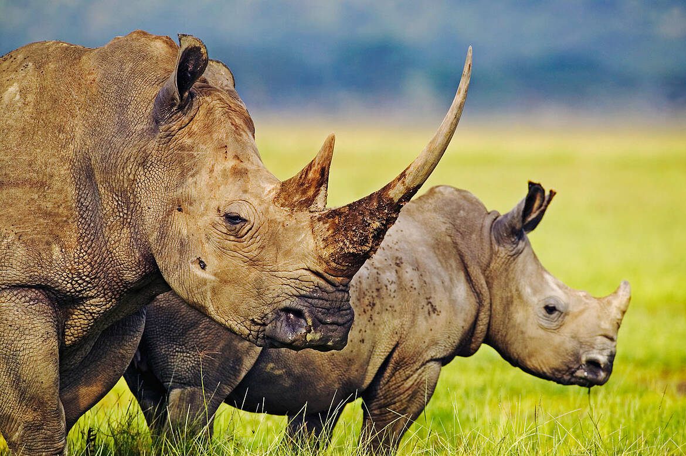

Introduction
In recent years, the world has witnessed an unparalleled increase in the poaching and trade of extinct and protected species, threatening the efforts of millions of individuals as they aim to conserve the biodiversity that exists on the earth. With the ever-increasing threat of poaching, some of the world's most unique species are in danger, some being elephants, rhinoceroses, birds, monkey, tigers, reptiles and numerous indigenous plant species.
Animal Poaching
The word poaching from an environmental perspective refers to the illegal trespassing or hunting of a particular species without the permission of landowners or authority from government-protected areas in order to gain from the animal or plant and benefit economically.


 

Motive of poaching?
The primary reason for poaching is for economic benefit, there are many other proposed motives, some being for pleasure, sport, hunting, cultural purposes, or because they do not agree with certain hunting regulations. In some rare cases such as indigenous populations in the United States, hunting is not only used to preserve culture, heritage and traditions but also in order to relieve the suffering from poverty that these populations may experience.
Effects of Poaching
Due to the increasing threat of poaching, detrimental effects arise on both the organisms being poached and the individuals within the surrounding region. Firstly, the population of animals drastically declines to the point of near extinction for some organisms and for others, they have already surpassed that point. The decrease of one species not only affects that species’ existence but also affects all other species within that food chain, as it creates a domino effect.
Major Countries and Organizations Involved
-
World Wildlife Fund (WWF)
The World Wildlife Fund is one of the largest organizations aiming to ensure the sustainable development of the earth. -
TRAFFIC
TRAFFIC is a leading organization worldwide that aims to conserve the extensive and diverse wildlife found on earth. -
United Nations Development Programme (UNDP)
One of the most extensive efforts to accurately document the poaching and illicit trafficking of flora and fauna regionally is that taken by the United Nations Development Programme. The UNDP-GEF Biodiversity and Ecosystems portfolio is “the largest in the UN system, covering over 130 countries and 500 projects with USD 1.5 billion in funding and USD 3.5 billion of co-financing”. -
China
China is one of the most popular destinations for both animal and plant products -
India
” Similar to China, India also uses these animal and plant products to formulate traditional medicines and other substances.
Actions taken to solve the Issue
-
World Wildlife Fund (WWF) Efforts
The organization “assists governments and communities to protect the natural systems critical to saving wildlife and wild places, securing valuable flows of ecosystems services and local livelihoods based on principles of social and environmental sustainability -
Wildlife Conservation Society (WCS) Initiatives
The WCS has “partnered with the United States military to develop, implement and maintain an outreach program that will discourage consumers from purchasing wildlife souvenirs by having personnel stationed at oversea borders -
Combatting the Illegal Wildlife Trade
The complete monitorization of these networks is not ideal (since it would be an infringement on the right to free internet access), restricted surveillance may be an option that nations should consider.This will not only stop the trading process, but also locate these criminal groups so that they may be punished as necessary.
Prevention
Preventing animal poaching necessitates a comprehensive approach encompassing public education, community engagement, law enforcement enhancement, technological innovation, international cooperation, protected area management, demand reduction efforts, legislative reinforcement, and conservation initiatives.